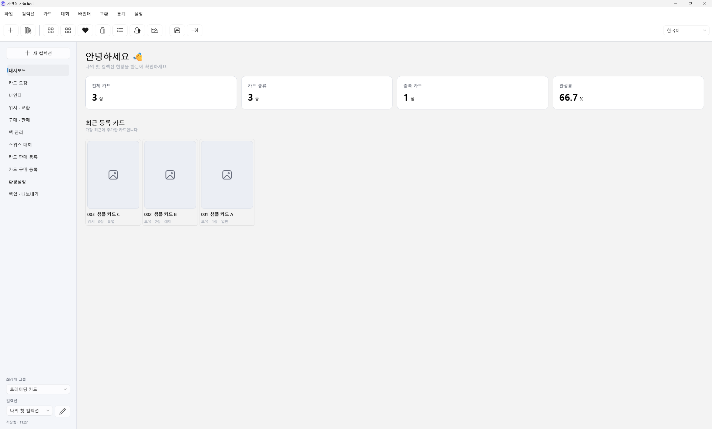
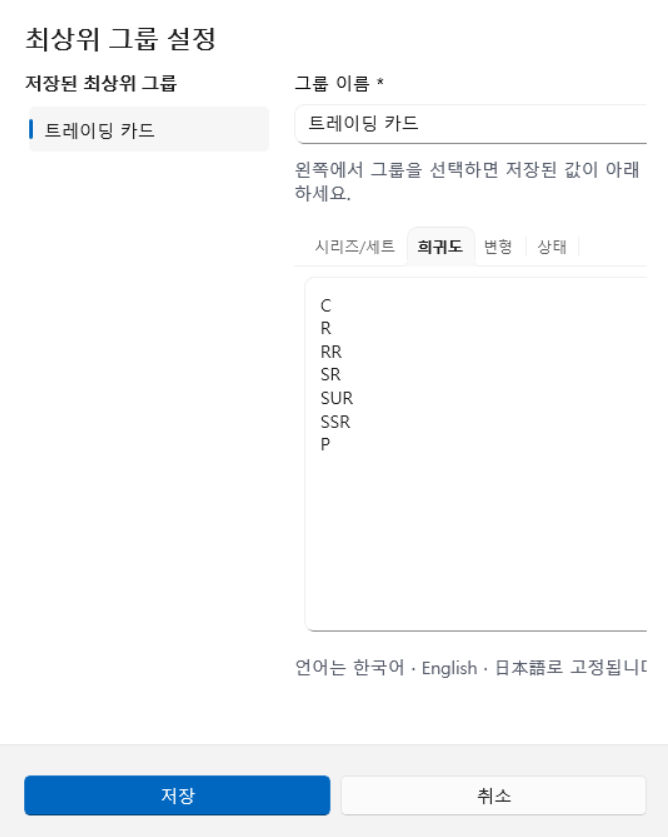
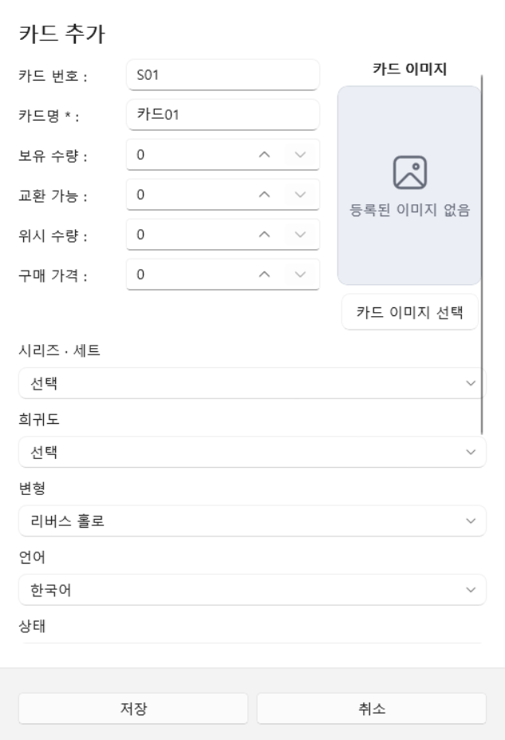
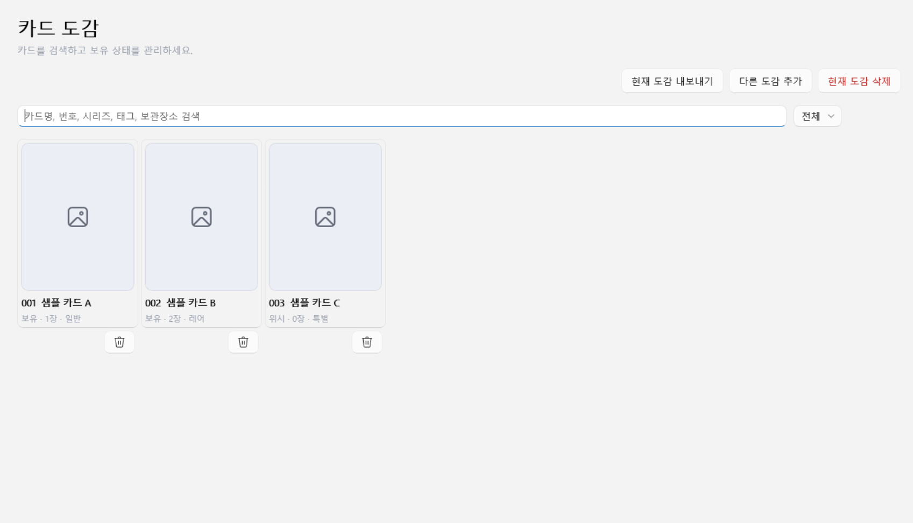
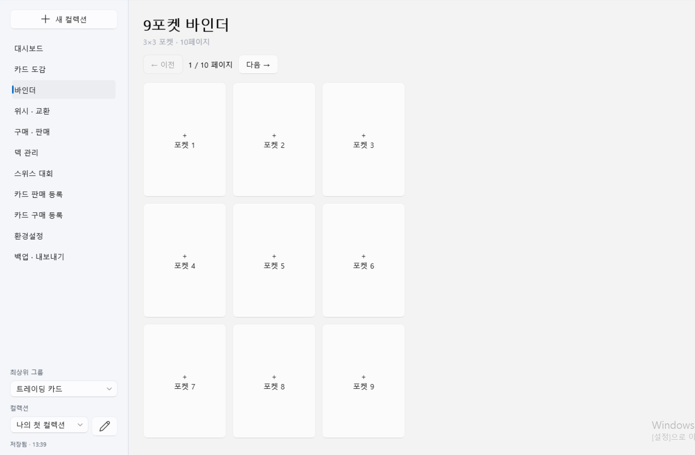
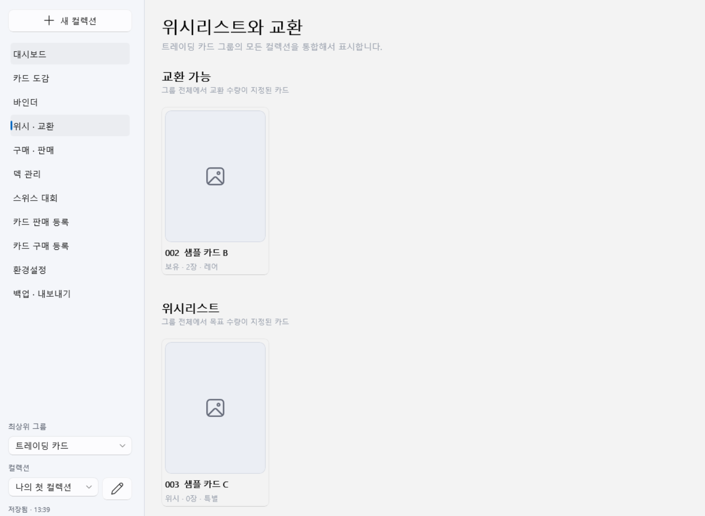
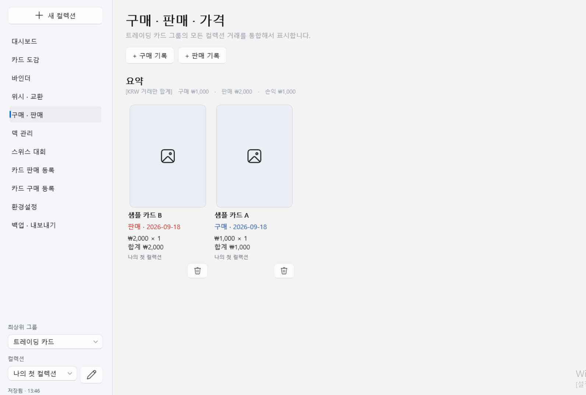
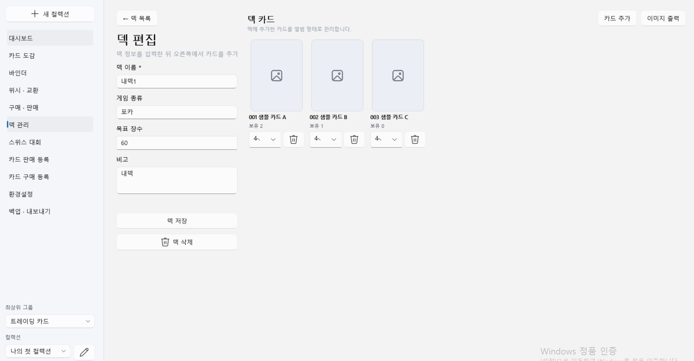
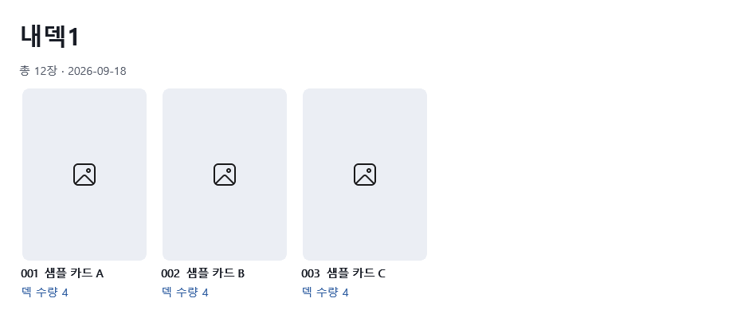
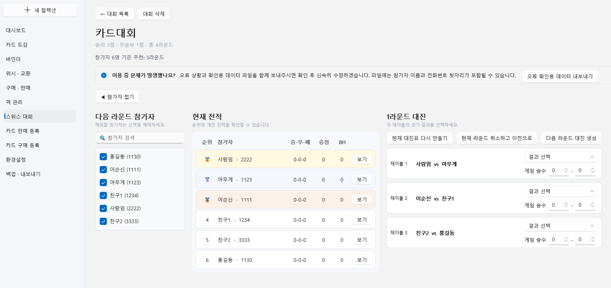

카드를 모으는 시간에
더 집중하세요.
그룹과 도감을 만들고, 카드 이미지와 보유 수량을 기록하고, 바인더·거래·덱·대회까지 관리하는 방법을 안내합니다.
점선 상자는 화면 캡처를 넣을 자리입니다. 안내된 파일명으로
images 폴더에 저장하면, 아래 주석의 이미지 태그로 교체할 수 있습니다.1. 처음 시작하기
앱을 처음 실행했다면 그룹 → 컬렉션 → 카드 순서로 등록합니다.
- 최상위 그룹을 만듭니다.상단의 컬렉션 → 새 그룹을 선택하고 카드 종류를 대표하는 이름을 입력합니다.
- 그룹의 분류값을 준비합니다.컬렉션 → 그룹 설정에서 시리즈/세트, 희귀도, 변형, 상태를 한 줄에 하나씩 등록합니다.
- 컬렉션을 만듭니다.왼쪽의 새 컬렉션을 누르고 도감 이름을 입력합니다.
- 첫 카드를 등록합니다.상단 도구 모음의 카드 추가 버튼 또는 Ctrl+N을 누릅니다.

2. 화면 구성
같은 기능을 상단 메뉴, 아이콘 도구 모음, 왼쪽 탐색 메뉴에서 열 수 있습니다.
상단 메뉴
파일, 컬렉션, 카드, 대회, 바인더, 교환, 통계, 설정 기능을 찾습니다.
빠른 도구 모음
카드 추가, 도감, 바인더, 거래, 덱, 대회, 통계, 백업을 바로 엽니다.
왼쪽 탐색
현재 작업 화면을 전환합니다. 아래쪽에서 그룹과 컬렉션을 선택합니다.
작업 영역
선택한 기능의 목록, 입력 양식, 통계가 표시됩니다.
3. 그룹과 컬렉션
그룹은 여러 컬렉션을 묶는 가장 큰 단위입니다. 같은 분류 기준을 공유할 도감을 한 그룹에 두세요.
그룹 설정하기
- 컬렉션 → 그룹 설정을 엽니다.왼쪽에서 수정할 그룹을 고릅니다.
- 분류값을 입력합니다.시리즈/세트, 희귀도, 변형, 상태 탭마다 한 줄에 하나씩 입력합니다.
- 저장을 누릅니다.이 값들은 카드를 등록할 때 선택 목록으로 나타납니다.

도감 옮기기와 공유하기
카드 도감 화면의 현재 도감 내보내기는 이미지까지 포함한 .cardcatalog 파일을 만듭니다. 받은 파일은 원하는 그룹을 선택한 뒤 다른 도감 추가로 가져옵니다. 이름이 겹치면 번호가 붙습니다.
4. 카드 등록·관리
카드명만 필수이며, 나머지는 필요에 따라 입력할 수 있습니다.
- 카드 추가를 누릅니다.등록할 컬렉션이 왼쪽 아래에서 선택되어 있는지 먼저 확인합니다.
- 기본 정보를 입력합니다.카드 번호, 카드명, 보유 수량, 교환 가능 수량, 위시 수량, 구매 가격을 기록합니다.
- 이미지를 선택합니다.PNG, JPG, JPEG, WEBP 파일을 사용할 수 있습니다.
- 분류와 메모를 입력합니다.시리즈, 희귀도, 변형, 언어, 상태, 보관장소, 태그, 비고를 기록하고 저장합니다.

검색하고 수정하기
카드 도감의 검색창은 카드명, 번호, 시리즈, 태그, 보관장소, 메모를 함께 검색합니다. 오른쪽 필터에서 전체·보유·미보유·중복·교환 가능·위시·이미지 없음을 골라 빠르게 좁힐 수 있습니다. 카드 이미지를 열면 확대 보기에서 좌우 이동과 수정이 가능합니다.

5. 바인더
실물 바인더의 포켓 배치를 앱 안에 그대로 기록합니다.
- 왼쪽에서 바인더를 엽니다.페이지 이동 버튼으로 원하는 페이지를 고릅니다.
- 빈 포켓을 누릅니다.그룹과 컬렉션을 선택하고 보유 중인 카드를 고릅니다.
- 배치를 저장합니다.카드를 바꾸려면 해당 포켓을 다시 누르고, 비우려면 비우기를 누릅니다.

6. 위시·교환
선택한 최상위 그룹의 모든 컬렉션을 합쳐 표시합니다.
카드 수정 화면에서 교환 가능 수량을 1 이상 지정하면 교환 가능 목록에, 위시 수량을 1 이상 지정하면 위시리스트에 나타납니다. 교환 가능 수량은 보유 수량을 넘지 않도록 저장됩니다.

7. 구매·판매
거래 기록은 그룹 단위로 합산하며 구매액, 판매액, 손익을 보여줍니다.
거래 기록 직접 입력
구매 · 판매에서 + 구매 기록 또는 + 판매 기록을 누릅니다. 컬렉션과 카드를 선택하고 날짜, 수량, 통화, 장당 가격, 배송비와 수수료를 입력합니다. 기준 통화와 다른 거래는 요약 합계에서 제외됩니다.
판매·구매 목록 이용
카드 판매 등록 또는 카드 구매 등록에서 여러 카드를 고르고 가격과 장수를 입력할 수 있습니다. 완료 처리하면 거래 기록과 보유 수량에 반영됩니다. 가격과 수량을 입력한 목록은 공유용 이미지로 만들 수도 있습니다.

8. 덱 관리
그룹 안의 카드를 덱에 추가하고 목표 장수와 부족 수량을 확인한 뒤, 완성된 덱 목록을 PNG 이미지로 저장할 수 있습니다.
- 새 덱 만들기를 누릅니다.덱 이름, 게임 종류, 목표 장수와 메모를 입력합니다.
- 오른쪽의 카드 추가를 누릅니다.그룹과 컬렉션을 고른 뒤 덱에 넣을 카드를 한 장 이상 선택합니다. 여러 카드를 동시에 선택할 수 있습니다.
- 선택한 카드별 덱 수량을 지정합니다.입력한 수량이 선택한 모든 카드에 동일하게 적용됩니다. 이미 덱에 있는 카드를 다시 추가하면 기존 수량에 더해집니다.
- 덱을 저장합니다.목록에서 현재 장수/목표 장수와 부족한 수량을 확인합니다.
- 이미지 출력을 누릅니다.덱 이름, 전체 장수, 날짜와 카드 목록이 들어간 미리보기를 확인하고 PNG 이미지 저장을 누릅니다.


9. 스위스 대회
참가자를 등록하고 라운드별 대진과 결과, 최종 순위를 관리합니다.
- 새 스위스 대회를 만듭니다.대회 이름과 진행할 라운드 수를 입력합니다.
- 참가자를 등록합니다.이름과 전화번호 뒷자리를 입력합니다. 첫 라운드 전까지 참가 여부를 바꾸거나 삭제할 수 있습니다.
- 1라운드 대진을 생성합니다.각 테이블의 승자 또는 무승부를 선택합니다. 부전승은 3점으로 자동 처리됩니다.
- 다음 라운드를 진행합니다.필요하면 참가자를 제외하고 대진을 만듭니다. 순위는 승점, 부흐홀츠, 승리 수 순으로 정렬됩니다.
- 최종 결과를 확인합니다.계획한 라운드가 끝나면 개인 전적과 최종 순위를 확인합니다.

10. 백업·복원
앱 데이터는 PC에 자동 저장되지만, 기기 고장이나 교체에 대비해 별도 백업이 필요합니다.
전체 백업 만들기
- 백업 · 내보내기를 엽니다.왼쪽 메뉴나 Ctrl+B를 사용합니다.
- 전용 백업 만들기를 누릅니다.저장 위치를 정하면 모든 데이터와 카드 이미지를 하나의
.cardarchive파일로 저장합니다. - 파일을 안전한 곳에 복사합니다.외장 저장 장치나 개인 클라우드에 날짜별로 보관하세요.
백업 복원하기
백업 가져오기에서 .cardarchive 파일을 선택하고 복원을 승인합니다. 현재 데이터는 복원 전에 자동 저장되며, 선택한 백업 내용으로 교체됩니다. 포함된 이미지는 새 PC에도 복원됩니다.
복원은 현재 데이터를 선택한 백업의 내용으로 교체합니다. 복원 직전에 최신 전체 백업을 하나 더 만들어 두는 것을 권장합니다.
11. 설정과 단축키
상단 오른쪽에서 한국어, English, 日本語를 선택할 수 있고 환경설정에서 기준 통화와 시작 화면을 바꿀 수 있습니다.
| 단축키 | 기능 |
|---|---|
| Ctrl+N | 카드 추가 |
| Ctrl+F | 카드 도감 열기 / 검색 |
| Ctrl+S | 현재 데이터 저장 |
| Ctrl+B | 백업 화면 열기 |
| ← / → | 카드 확대 보기에서 이전 / 다음 카드 |
| + / - / 0 | 카드 확대 보기에서 확대 / 축소 / 원래 크기 |
12. 자주 묻는 질문
카드 이미지도 자동 저장되나요?
네. 선택한 이미지는 앱의 로컬 저장소에 복사됩니다. 다른 PC로 옮길 때는 이미지가 포함되는 .cardarchive 전체 백업을 사용하세요.
.cardarchive와 .cardcatalog의 차이는 무엇인가요?
.cardarchive는 앱 전체 데이터와 이미지를 보관하는 복구용 파일입니다. .cardcatalog는 선택한 도감 하나를 다른 사용자나 그룹에 추가하기 위한 공유용 파일입니다.
완성률은 어떻게 계산되나요?
현재 컬렉션에 등록된 카드 종류 가운데 보유 수량이 1장 이상인 카드 종류의 비율입니다.
앱을 지우기 전에 무엇을 해야 하나요?
반드시 최신 .cardarchive 전체 백업을 만들고, 앱 밖의 안전한 폴더에 복사한 뒤 파일이 존재하는지 확인하세요.
공식 카드 이미지와 데이터가 포함되어 있나요?
포함되어 있지 않습니다. 카드 정보와 이미지는 사용자가 직접 등록하며, 등록하거나 공유하는 콘텐츠의 이용 권한은 사용자가 확인해야 합니다.